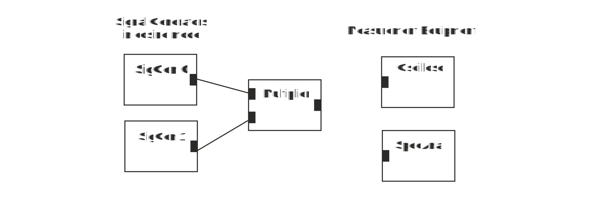

Replace Adder in the previous exercise with a Multiplier node.
Figure 1 Multiplier, its output is the product of the two input signals.
1. Look at the output signal of signal generator 0. What is the period of the output cosine waveform?
2. This corresponds to frequency
3. Look at the output signal of signal generator 1. What is the period of the output cosine waveform?
4. It corresponds to frequency
5. Connect oscilloscope to the output terminal of the multiplier. Set time base so that you see each cycle of the waveform. What does it look like?
6. Look at the output of the multiplier with the spectrum analyzer. Which frequency components are present?
7. Output consists of
8. Compare output signal of signal generator 0 and output signal of the multiplier with spectrum analyzer. What has happened to 50 kHz signal when it is multiplied by 500 kHz cosine waveform?
9. Change frequency of signal generator 0 to 100 kHz. Now spectral components at the output of the multiplier are:
10. When two cosine waveforms, the first at frequency f1 and the other at f2 are multiplied, the product contains
11. Set frequency of both signal generators to 50 kHz cosine waveform with 1 V amplitude and compare input and output waveforms of the multiplier at the product by oscilloscope. Output signal is